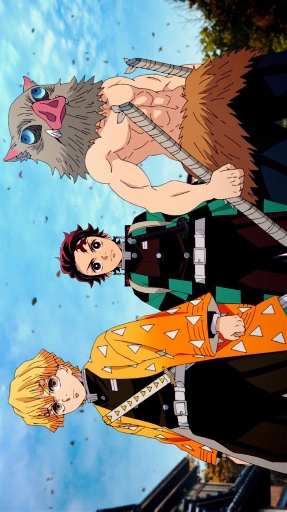
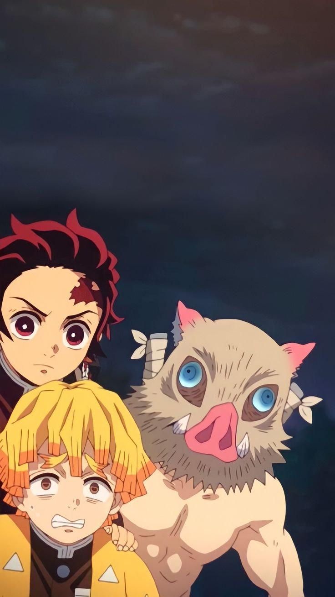
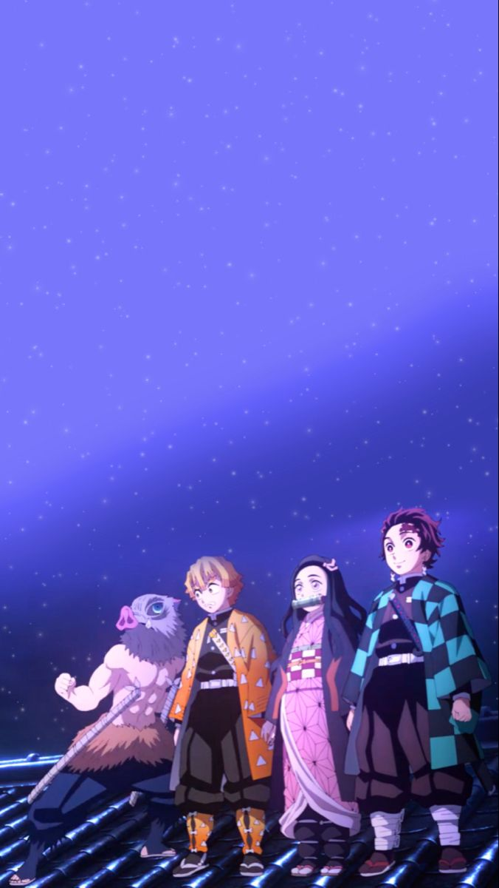

Bienvenidos al mundo de Kimetsu No Yaiba: Demon Slayer
Introducción
Demon Slayer: Kimetsu no Yaiba es una emocionante historia de valentía, venganza y redención. Sigue a Tanjiro Kamado, un joven bondadoso cuya familia es masacrada por demonios, dejando a su hermana Nezuko como la única sobreviviente, aunque transformada en un demonio. Determinado a encontrar una cura y vengar a su familia, Tanjiro se une a los Cazadores de Demonios, enfrentando poderosos enemigos y descubriendo secretos ocultos en el mundo de los demonios. ¡Explora este increíble universo y sumérgete en su épica aventura!
Una nueva forma
La amistad entre Tanjiro Kamado y Zenitsu Agatsuma en Demon Slayer es una de las relaciones más entrañables y profundas de la serie. Aunque inicialmente parecen ser muy diferentes, su vínculo crece y se fortalece a lo largo de la historia.
Tanjiro es un joven calmado, responsable y bondadoso, mientras que Zenitsu es más impulsivo, temeroso y se siente inseguro de sus habilidades. Zenitsu, a menudo, parece un compañero poco confiable debido a su miedo, pero Tanjiro nunca pierde la fe en él. A pesar de las diferencias en sus personalidades, Tanjiro se convierte en un gran apoyo para Zenitsu, tratando de animarlo y motivarlo a superar sus temores.
A lo largo de la serie, Zenitsu empieza a desarrollar una admiración profunda por Tanjiro, viéndolo como un líder y un amigo genuino. Aunque Zenitsu no siempre cree en sí mismo, Tanjiro constantemente le recuerda su potencial, y esta amistad le da la fuerza para enfrentar sus miedos y dar lo mejor de sí en momentos cruciales. La conexión entre los dos es también una fuente de momentos cómicos y emotivos, con Zenitsu mostrando su devoción hacia Tanjiro, especialmente cuando lo defiende o se preocupa por su bienestar.
  